Bonjour, Je suis Paul ⚡
J'ai 15 ans et j'habite en France. Je suis intéréssé par la culture DevOps.Mon Expérience
J'ai pu travailler sur de nombreux projets en tant qu'administrateur système et réseaux. Ces différents travaux m'ont permis d'apprendre énormement de choses et j'ai pu y rencontrer des gens extraordinaires !Mes Technologies
J'utilise de nombreuse technologies pour me faciliter le travail lors du déployement de mes infrastructures. Je pense devoir encore progresser sur beaucoup d'outils de cette liste, mais ils sont indispensables dans mon travail.